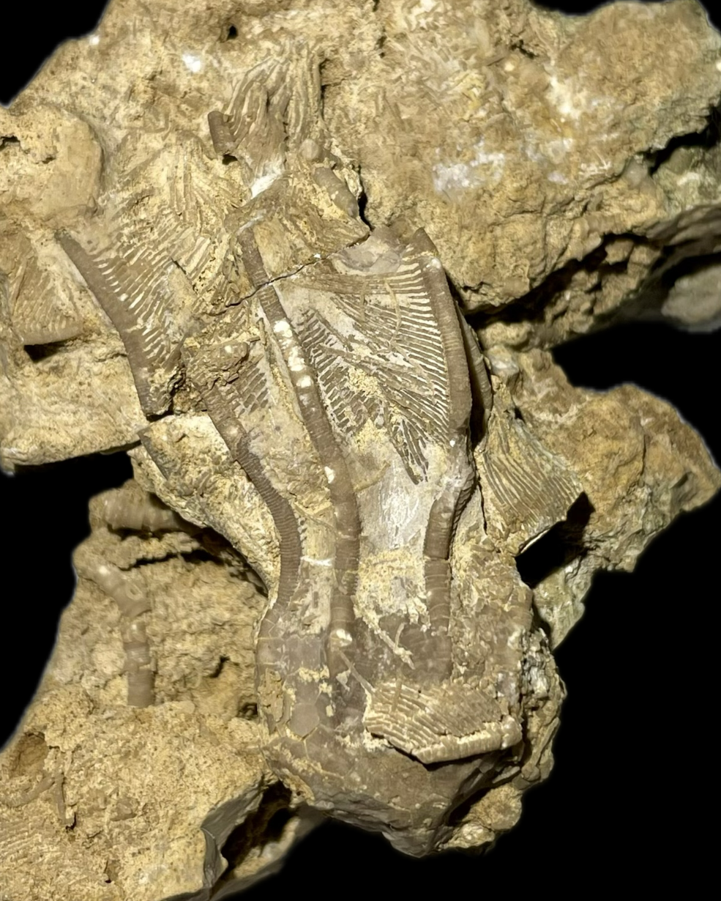

HOME
Crinoid
Abludoglyptocrinus sp.
• Ordovician
• Plattin Group - Zell Member, Macy Limestone Formation
• Jefferson County, Missouri, USA
Size: 6.5 cm crown

Copyright © 2026 by Samuel Kim, all rights reserved